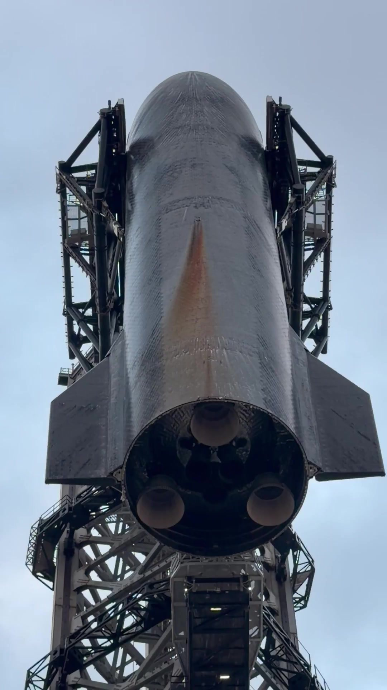
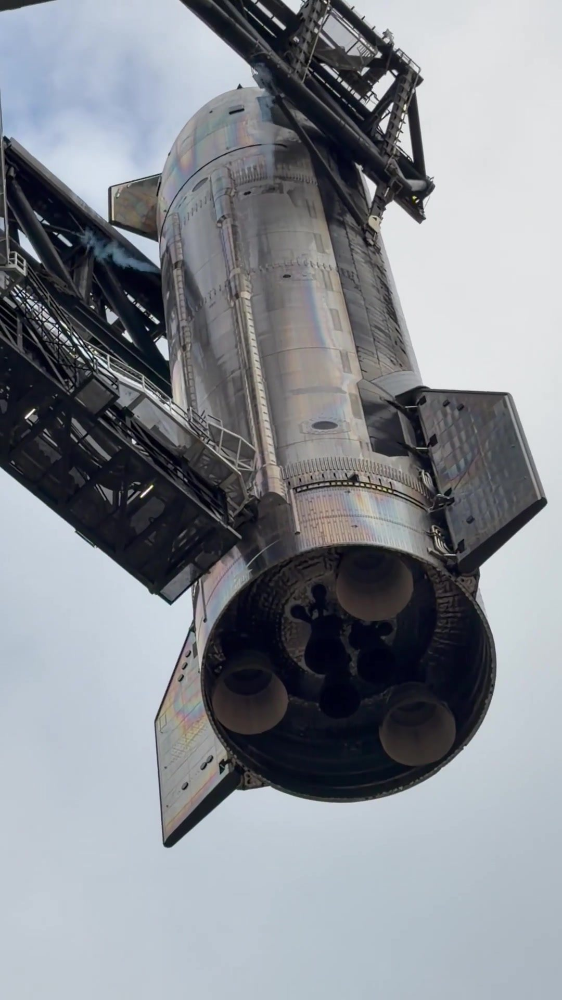
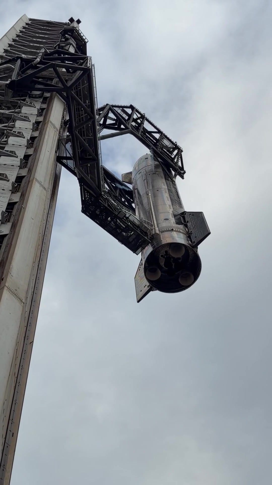

Il primo catch di una Starship rientrata dall’orbita non è ancora stato digerito e Elon Musk guarda già oltre. Domenica sera, ora italiana, ha raccontato su X di aver passato in rassegna tutto lo scudo termico di Ship 42, la nave ripresa sabato dai bracci della torre di Starbase: «Overall, it looks great. The engines look great too», nel complesso è in ottime condizioni, e anche i motori. Conclusione: la nave «could probably be reflown with a few weeks of refurbishment», potrebbe probabilmente rivolare dopo qualche settimana di lavori. Alle 2:33 di lunedì è arrivato il secondo annuncio, quello sul futuro: Starship V4 sarà lunga circa 70 metri e avrà nove motori.
Musk sotto la nave
Ship 42 è tornata a casa sabato 14 novembre alle 22:20 ora italiana, dopo circa 22 ore e mezza e 14 orbite, ed è stata la prima Starship della storia recuperata intera dopo un volo spaziale. Musk era a Starbase. Poco più di un’ora dopo il catch ha pubblicato un breve video girato con il telefono da sotto la torre, con la nave ancora appesa ai bracci: «Inspecting ship 42 right now», sto ispezionando Ship 42 in questo momento. Poco dopo la mezzanotte un secondo video, con un commento di tre parole: «Ship 42 looks great!». Più tardi, a notte fonda, la frase che ha fatto il giro della rete: «I hugged ship 42 upon its return», ho abbracciato Ship 42 al suo ritorno.
Domenica pomeriggio in Texas l’ispezione è diventata più metodica. Gli osservatori presenti a Starbase hanno ripreso Musk su una piattaforma elevatrice al Pad 2 mentre controllava da vicino le piastrelle dello scudo termico, insieme a molti dipendenti di SpaceX arrivati a vedere la nave da vicino, prima sospesa ai bracci e poi calata sul suo supporto. Alle 23:20 italiane il bilancio di Musk su X, in risposta a un post che lo mostrava sulla rampa: lo scudo termico e i motori sono in ottimo stato e la nave potrebbe essere riutilizzata con qualche settimana di ricondizionamento.

Riutilizzabile sì, ma non ancora come un aereo
La frase di Musk ha però una seconda parte, ed è quella che spiega quanto lavoro manca. «However, many small fixes are needed to achieve immediate reusability (like an airplane), which requires zero expected refurbishment, apart from scheduled maintenance». Tradotto: servono ancora molte piccole correzioni per arrivare alla riutilizzabilità immediata, come quella di un aereo, che non prevede alcun ricondizionamento a parte la manutenzione programmata. In un’altra risposta, poco dopo la mezzanotte, ha aggiunto che Ship 42 riporta a terra «a motherlode of data», una miniera di dati per migliorare ancora lo scudo termico.
È la differenza tra recuperare un veicolo e riusarlo davvero. Il booster Super Heavy è stato ripreso dalla torre tre volte prima di questo volo, e SpaceX lo ha fatto rivolare in due occasioni: Booster 14 ha volato su Flight 7 a gennaio 2025 e di nuovo su Flight 9 a maggio; Booster 15 su Flight 8 a marzo 2025 e su Flight 11 a ottobre. Ogni volta sono passati mesi tra un volo e l’altro. Una nave, invece, non è mai stata riutilizzata, semplicemente perché fino a sabato nessuna era tornata intera. Se Ship 42 ripartisse davvero dopo poche settimane, sarebbe il primo riuso di uno stadio superiore di Starship e un tempo di rotazione mai visto nel programma.
Domenica sera la nave ha lasciato la rampa. Alle 22:41 italiane è partito il trasferimento lungo la Highway 4 verso il sito di produzione, poco più di tre chilometri. Poco dopo la mezzanotte Ship 42 era di nuovo nella Megabay dove era stata costruita, accanto a Ship 40, la nave di Flight 13 recuperata dall’Oceano Indiano e riportata in Texas a ottobre. Lì gli ingegneri potranno smontare, misurare e confrontare i dati di bordo con lo stato reale delle piastrelle e dei motori.

Starship V4, che cosa cambia
Poche ore dopo, alle 2:33 di lunedì ora italiana, Musk ha citato un post dedicato alle dimensioni di Starship, «The scale of Starship». Il testo è breve e preciso: «Starship V4 will be ~70m long, which is roughly a 40% length increase and allows >60% more propellant load. Engine count will be raised to 9, with 3 more Raptor-Vacuum engines added, and these will be higher thrust V4 engines». Starship V4 sarà lunga circa 70 metri, circa il 40% in più, e potrà caricare oltre il 60% di propellente in più. I motori passeranno a nove, con tre Raptor Vacuum aggiuntivi, e saranno i nuovi Raptor V4 a spinta maggiore.
Il riferimento è la nave, lo stadio superiore, non il razzo intero. SpaceX indica per la Ship attuale una lunghezza di 52 metri, sei motori (tre Raptor e tre Raptor Vacuum) e circa 1.600 tonnellate di propellente; il booster Super Heavy misura 72 metri con 33 Raptor, per un totale di 124 metri. Rispetto ai 52 metri ufficiali, 70 metri sono circa il 35% in più: il 40% citato da Musk è un ordine di grandezza, non un dato di progetto. Con il 60% di propellente in più, la nave V4 supererebbe le 2.500 tonnellate. Se i tre Raptor da livello del mare restano, i Raptor Vacuum raddoppiano da tre a sei: più spinta e più efficienza proprio nella parte del volo che si svolge nel vuoto, quella che conta per portare carichi pesanti in orbita.
Musk non ha dato date, cifre di carico utile o valori di spinta per i nuovi motori. Già nell’agosto 2025 aveva anticipato una V4 con tre motori in più, una nave «significantly longer» e un debutto nel 2027. Nel prospetto per la quotazione in Borsa SpaceX indica per la generazione V3 circa 100 tonnellate in orbita e per le generazioni successive fino a 200 tonnellate. Il post di domenica è finora la descrizione più concreta della nuova nave.

Perché conta per la Luna
Una nave più grande non serve solo a portare più satelliti Starlink V3 per lancio. Il punto decisivo è il rifornimento in orbita. La versione lunare di Starship, scelta dalla NASA come lander per il programma Artemis, deve fare il pieno in orbita terrestre prima di partire verso la Luna, e il propellente arriva da una serie di navi cisterna. Quante ne servano è da mesi uno dei temi più discussi: a ottobre un membro del comitato consultivo per la sicurezza della NASA ha parlato di circa 22 lanci, mentre Musk ha replicato che sarebbero piuttosto «6 to 8».
Gran parte della differenza dipende da quanto propellente porta ogni cisterna. Musk ha già detto che una cisterna V4 potrebbe consegnare oltre 200 tonnellate per volo, abbastanza, nei suoi calcoli, per scendere a cinque o sei lanci per ogni missione lunare. Meno lanci significano missioni più rapide e meno rischi. Ed è qui che le due notizie del fine settimana si incontrano: una cisterna più grande serve a poco se ogni nave va ricostruita dopo il volo. Ship 42 dice che il recupero funziona; la V4 dice quanto SpaceX vuole portare in orbita ogni volta.
Cosa manca
Il primo problema da chiudere è il booster. Su Flight 15 Booster 22 ha interrotto da solo l’avvicinamento alla torre ed è finito nel Golfo del Messico. Musk ha spiegato che i motori hanno reso un po’ meno del previsto e che il booster, progettato per atterrare con riserve minime, è rimasto corto di propellente. La soluzione indicata è migliorare le prestazioni e la costanza dei motori con il Raptor V3.2 e anticipare di circa un secondo lo spegnimento dei motori in salita. Ha aggiunto che le prime conclusioni sono spesso in parte sbagliate e che serve l’analisi completa della telemetria.
Poi c’è la nave: le ispezioni nella Megabay diranno se le poche settimane stimate da Musk sono realistiche. Per ora restano tre fatti verificati: Ship 42 è a casa, intera; il suo scudo termico, a un primo esame, ha retto; e la prossima Starship sarà più grande di quella che sabato ha cambiato la storia del programma.
Il catch di sabato è raccontato nel dossier su Mechazilla che prende Ship 42, che passa all’archivio Notizie; il decollo e la giornata in orbita nel dossier su Flight 15 in orbita, il viaggio di Ship 40 nel dossier sul suo ritorno a Starbase.
Fonti pubbliche e tracce
Ultimo aggiornamento editoriale: 16 novembre 2026 alle 9:13 (ora italiana). Nel corpo non si ripete la fonte a ogni frase: le tracce sono raccolte qui. Orari espressi in ora italiana. Il confronto tra 52 e 70 metri e la stima delle 2.500 tonnellate sono calcoli della redazione sui dati della pagina ufficiale di Starship.
- Elon Musk su X, 16 novembre 2026, 2:33: Starship V4 lunga circa 70 metri, circa il 40% in più, oltre il 60% di propellente in più, nove motori con tre Raptor Vacuum aggiuntivi a spinta maggiore.
- Elon Musk su X, 15 novembre 2026, 23:20: ispezione dello scudo termico, Ship 42 riutilizzabile con qualche settimana di ricondizionamento, molte piccole correzioni per la riutilizzabilità immediata; «motherlode of data» per lo scudo termico (status 2122108594183414081, 16 novembre, 0:24).
- Elon Musk su X, 14 e 15 novembre 2026: «Inspecting ship 42 right now» (14 novembre, 23:36), «Ship 42 looks great!» (status 2121746382402797892, 15 novembre, 0:25), «I hugged ship 42 upon its return» (status 2121763977349013884, 15 novembre, 1:35); spiegazione della perdita di Booster 22, Raptor V3.2 e spegnimento anticipato di un secondo (status 2121648438144024943, 14 novembre, 16:54).
- Spaceflight Now su X, 15 e 16 novembre 2026: Musk e i dipendenti di SpaceX ispezionano lo scudo termico al Pad 2; trasferimento di Ship 42 verso la Megabay (status 2122082475677540674) e arrivo al sito di produzione.
- NASASpaceflight su X, 16 novembre 2026, 0:07: Ship 42 di nuovo al sito di produzione; incontro con Ship 40 (status 2122103058754687309).
- SpaceX, pagina ufficiale di Starship: Ship di 52 metri con sei motori e circa 1.600 tonnellate di propellente, Super Heavy di 72 metri con 33 Raptor, sistema completo di 124 metri.
- Teslarati, 16 novembre 2026: anticipazioni di Musk su V4 dell’agosto 2025, cifre del prospetto di quotazione (circa 100 tonnellate per V3, fino a 200 per le generazioni successive), dibattito sul numero di cisterne per le missioni lunari e cisterna V4 da oltre 200 tonnellate.
- Space.com, 15 novembre 2026: riutilizzi di Booster 14 (Flight 7 e 9) e Booster 15 (Flight 8 e 11), nessuna nave ancora riutilizzata.
- FourWeekMBA, 16 novembre 2026: confronto tra il post di Musk e i dati della pagina ufficiale di Starship.
Fotografie utilizzabili
Non esistono foto a licenza libera dell’ispezione di Ship 42 o di Starship V4 su Wikimedia Commons o nei canali NASA. La copertina è una foto ufficiale di SpaceX del 14 novembre, pubblicata sul suo account X; le altre tre immagini sono fotogrammi dei video girati da Elon Musk sotto la nave e pubblicati su X. Tutte sono usate con credito e dicitura «uso editoriale non commerciale». Dettagli in scheda dei crediti fotografici.
Apri il dossier sul catch di Ship 42, archiviato · Archivio Notizie · Torna a SpaceX